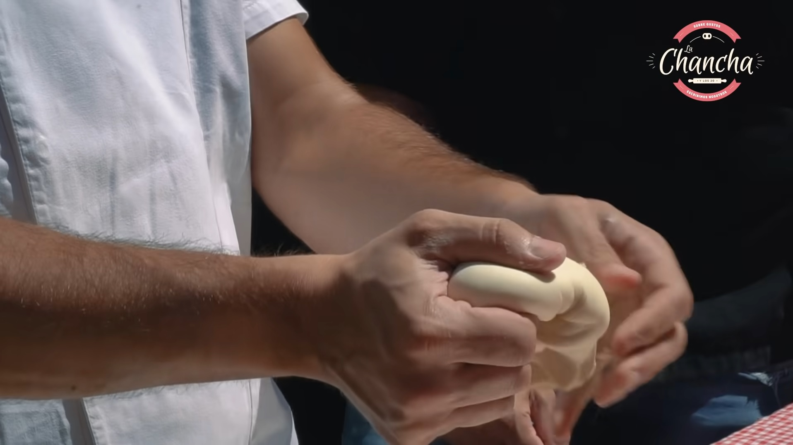
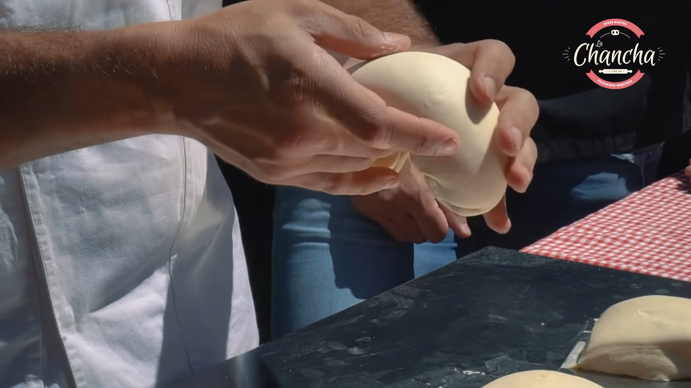
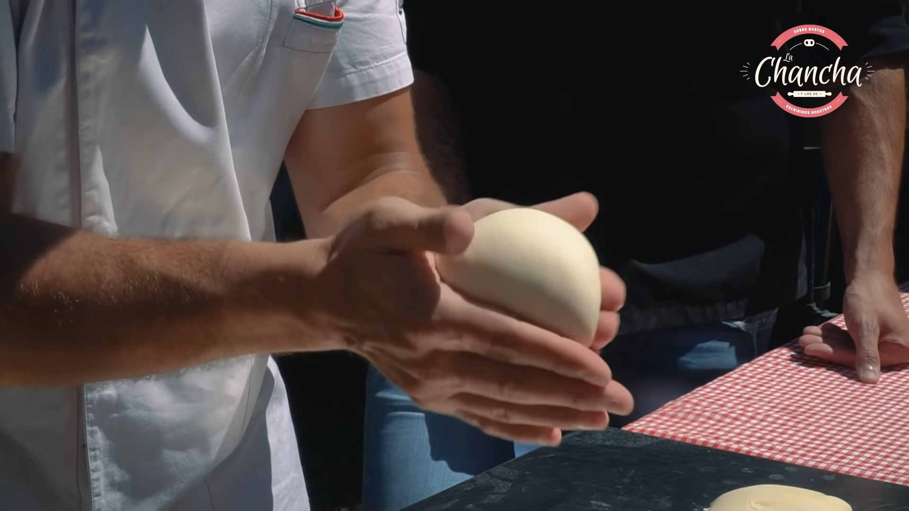
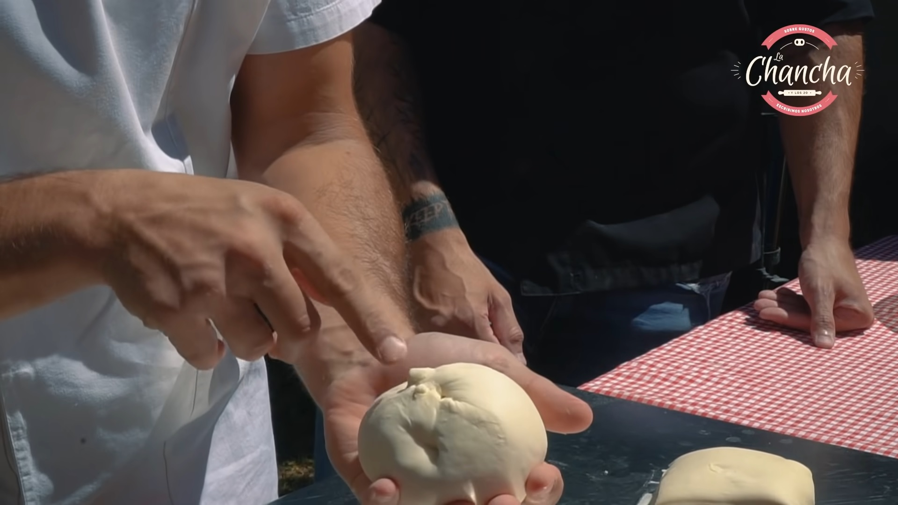

z
Joystick technique
- Grip the dough like a joystick

- Use your index, middle, ring and pinky for put the border of the dough in the center of the bottom part of
the dough

- after you close the union you form in the center of the bottom of the dough you gonna have a oval shape, now
fold the oval in their short axis.

- Close the last union we form and now use your two hand to make a sphere.

- is important that the dough is "close" in the bottom once we finish

Back to home page